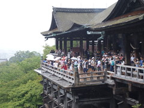

研修生のインド人2人が京都に行くというので、案内がてら一緒に行くことにした。
前日夜にいきなり決めて切符を取った衝動的旅行。京都は20年ぶりくらい。
一本前の新幹線で京都に着いて 3人分のバスのチケットを買い、駅で二人の到着を待つおもてなしぶり。
駅前のバス乗り場からかなり混雑していたが、二本目のバスでとりあえず清水寺へ。
二人は最初からなかなか楽しそうで安心した。
| 何教? | 逆サイドに走って2人を撮影する気遣い |
|
 |
祇園の古風な通りとか二条城は自分には楽しかったものの、二人にはそれほどでもなさそう。
やはり地味な日本文化にはあまり興味がないかと思い、銀閣寺はカットすることにした。
昼食は和食が却下されてカレーになった。まあ京都料理は彼らの口に合わなそうな予感がしていたので良かったかも。
どうも二人を見ていると年下の女性の方が圧倒的主導権を握っているようで面白い。
仲間内ではプリンセスと呼んでいる。
あれは鳥が鳴いているのか？ と聞かれて、セミという昆虫だと答えたら驚いていた。
インドにはセミがいないそうだが、これまで東京に一ヶ月滞在していて気付かないものか…
これがセミだ、と近くで見せたらキャーキャー言って怖がるプリンセス。
自分のミスでちょっと遠回りしてしまったが、最後は金閣寺へ。
建物と周囲の池や植物の調和した景観にあらためて感心する。剪定大変だろうな。
二人もかなり満足していた様子。
明日は USJ に行くらしいので、2人でがんばれと言って駅で別れた。
自分は和歌山まで足を延ばして一人でふらつく。
|